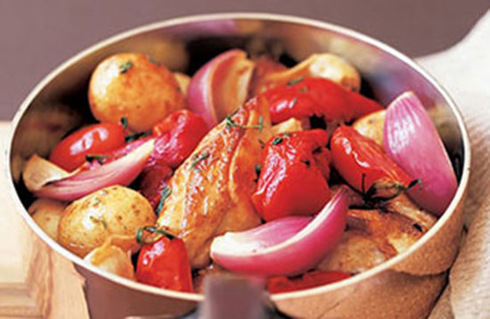
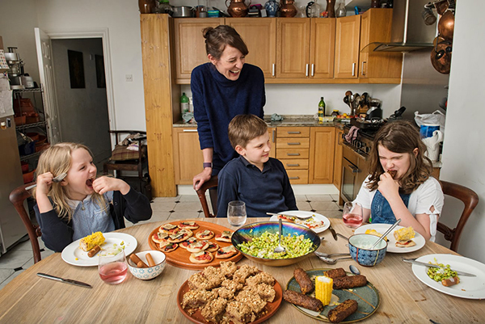
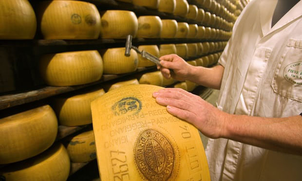
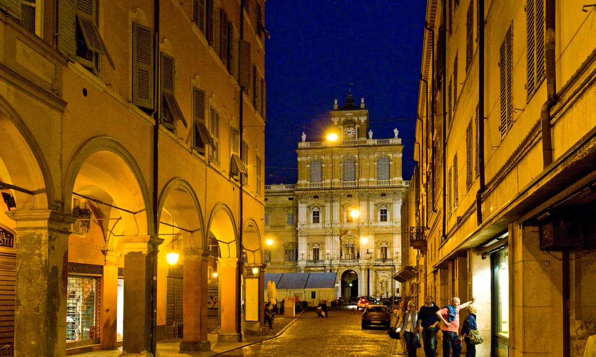

Margaret Fulton's Basque chicken recipe
The 50th anniversary reissue of The Margaret Fulton Cookbook offers a glimpse at how Australian tastes have evolved
Basque chicken
serves 4–6

Lavish use of capsicum and tomatoes is a characteristic of Basque cuisine.
Margaret Fulton's paella valenciana recipe
- 1.8kg chicken pieces or a size 18 chicken, jointed
- 2 tbsp olive oil
- 8 cloves garlic
- 3 red capsicum, seeded and cut into quarters
- 12 baby new potatoes, boiled for 8–10 minutes
- salt and freshly ground pepper
- 2 medium ripe tomatoes, skinned, deseeded and quartered
- 3/4 cup dry white wine or chicken stock
- chopped parsley
Preheat the oven to 190C. Dry chicken pieces well with paper towels and remove any excess fat.
Heat half the oil in a heavy-based flameproof baking dish over a moderate heat. Slowly brown the chicken pieces, turning them once or twice.
The Margaret Fulton Cookbook by Margaret Fulton (Hardie Grant Books $39.99) is out now.
The Margaret Fulton Cookbook by Margaret Fulton (Hardie Grant Books $39.99) is out now. Photograph: Hardie Grant Books
Add the remaining oil to the dish with the garlic, capsicum and potatoes, tossing together.
Season with the salt and pepper and bake for 45 minutes, turning the chicken and vegetables several times. Add tomatoes for last 15 minutes of cooking.
Arrange the chicken pieces in a serving dish. Surround with vegetables and keep warm. Add wine to dish over heat, scrape up crusty pieces and allow to simmer for a few minutes.
Spoon sauce over chicken and scatter with parsley.
Note: a red onion cut into eight can be added with the potatoes.
This is an edited extract from The Margaret Fulton Cookbook by Margaret Fulton (Hardie Grant Books $39.99) out now. Next week, Margaret’s beef and vermicelli noodle salad
Can ditching meat and dairy open up new taste sensations? My week as a foodie vegan
I’m going to describe the process of making vegan cheese. Later, I’ll tell you how popular veganism is, how it’s the dietary habit of the age, how all its staples and hangouts have changed and how to cook a vegan dinner for omnivores in a way that won’t leave them feeling shortchanged on deliciousness or still hungry. But first I have to talk about the cheese, because I found it quite traumatic.
You grind cashews in a food processor, then add garlic powder, salt, onion powder and deactivated nutritional yeast. The latter ingredient won’t make anything rise; it brings nothing to the party except its distinctive flavour, which vegans call “cheesy”, but is more accurately “yeasty”. That done, you heat soya milk with oil and several flakes of agar-agar – a tasteless vegan alternative to gelatine – which dissolve into the liquid over 10 minutes, except they don’t, not really.
Nothing coheres the way you expect. Substances float around each other until you crush them all with a blender. Add a bit of white miso, lemon juice, truffle oil, chives: survey your wreckage, which will be the wrong colour (cream with a hint of grey) and the wrong consistency (gluey). Then set it for a few hours, whereupon it becomes something else entirely. It still doesn’t taste of cheese, and it has a spongy bounciness that is unlike any cheese I have met (not even Edam comes close), but it’s actually … fine. There is nothing wrong with this substance. Slice it over some asparagus and toasted walnuts and you have a perfectly edible thing. But the process took me miles away from anything I understood about food, into the realms of papier-mache or slime. As Otto von Bismarck supposedly said of the sausage, if you want to enjoy it, it’s best not to see it being made.

The rise of seitan – a washed-wheat ingredient that can taste uncannily like meat, although not always – has created a new division, between the vegans who miss Nando’s and the ones to whom Nando’s represents the thing they were gladdest to escape. Jackfruit, another “foodie” alternative to meat, is weird: you can find it everywhere, from the Bonnington Cafe, the vegan pilgrimage destination in Vauxhall, south London, to Starbucks, but I have never seen a fresh one – it comes tinned and usually brined. Super-pure vegans complain about the saltiness, but that doesn’t trouble me. My problem is the texture. It starts off crunchy and squishy, then turns jammy, and there’s an aftertaste like tinned artichoke water. Apart from jackfruit, significant recent vegan developments have been in dairy-like foods – nearly everything, it turns out, can be squeezed into a milk – or, rather, a .
When cooking for children, I did what I always do when I’m trying to make them eat something they won’t like: make everything smaller than usual, so that it’s cute, then shout at them. Tiny pizzas with fake bacon were topped with a vegan mozzarella, which went transparent in the cooking process and shrivelled a bit, so it looked like I had festooned them with condoms. The bacon had an overwhelming fake-maple flavour and a chemical chewiness. It went down like a dead mouse in a quiche. Cicely, 10, would eat the tofu frankfurters, but only in microscopic amounts and to be nice. Thurston, also 10, wouldn’t even put the falafel koftes in his mouth.
I made some peanut butter and jelly bars with vegan egg and an unholy quantity of peanuts. Anything that smells overpoweringly of egg but isn’t an egg makes you think someone has done something terrible to your recipe, spilt chemicals in it or farted. The coconut oil brought an oleaginous clag and an aroma of bodywash. I should never have gone near vegan baking before talking to the chef , who counselled against going in on egg replacements. “When I bake, I use flax or chia seed. You can replace three eggs, but no more,” she says. “I wouldn’t use vegan cheese, because it just isn’t great – yet. Kids like to get involved, so often they’ll eat something they had a hand in making that they wouldn’t eat otherwise.”
All roads lead to Romagna

Emilia-Romagna is often overlooked by visitors, and that’s a shame because its many smaller cities are an absolute treat. And for those who enjoy building their trips around a narrative thread, there’s the Via Emilia, an ancient Roman road that connected Piacenza in the north to Rimini on the Adriatic coast.
Start in Piacenza, on the Po just south of Lombardy. Despite being bombed, it’s an attractive mix of romanesque, baroque and gothic architecture in a grid of narrow, cobbled streets. There are plenty of churches, palaces and museums, but that’s not what Piacenza is famous for. You come here for the cold cuts and the wines of the Colli Piacentini, Piacenza’s hills, known for perfumed malvasia and gutturnio wines, made with a mix of barbera and croatina grapes to produce sparkling tipples and heady riservas.
As for food, the pig is king. There are plenty of hearty pasta and rice dishes on menus in Piacenza, but the city is renowned for its cured meat. Locals prize coppa piacentina, made from pork shoulder and neck and aged for up to a year. But there’s a wealth of salumi to explore here, so swap a traditional dinner for boards of affettati, sliced meats, with cheese and mostarda condiment. Pair them with another regional staple, gnocchi fritti, fried golden pillows of bread.
A few minutes on foot from the city’s 12th-century cathedral, Osteria Santo Stefano has a relaxed, neighbourhood atmosphere and serves local specialities, with pastas from €8. The nearby Grande Albergo Roma (doubles from €92 room-only) is on the kitsch side, but the views from its rooftop terrace and bar more than make up for the décor.
Every wheel of parmesan is inspected after a year’s ageing by a man with a well-trained ear and a little hammer, searching for undesirable cracks and bubbles inside. Nothing beats finding an entire wheel of three-year-old cheese on a table, lid sliced off, innards exposed, ready to be hacked at with a little tagliagrana cheese knife.
Pepèn sandwich shop is a local institution: the owners will tell you they’ve fed half of Parma. At the other end of the scale, Parizzi is worth a visit, even with its Michelin-star pretension. Try the selection of aged cured meats (€18). Around 15 minutes north of the city, Locanda Abbazia (doubles from €100 B&B) has turned 10 monks’ cells into comfortable bedrooms, with all mod cons.

Modena, another hour east, is the birthplace of Enzo Ferrari and Luciano Pavarotti, and known for the balsamic vinegar made all around. Modena is also home to Massimo Bottura and his Osteria Francescana (10-course tasting menu €250), twice voted the world’s best restaurant. For more proletarian budgets, countless trattorias offer tortellini, hand-rolled egg pasta dumplings with meat, vegetables or cheese, usually served in broth. There’s also zampone, cured stuffed trotter, and cotechino, made with intestines.
Bottura’s top tip for eating in Modena is Trattoria Bianca , on an unremarkable street north of the station. Who would argue with Italy’s top chef? Pasta dishes start at €12. A short walk from the main Piazza Grande, Hotel Cervetta 5 (doubles from €125 B&B) has smart, understated rooms.
From Modena, it’s another 45km to Bologna, capital of Emilia-Romagna. A city of students, it has a rich history and fantastic eateries under its famous porticoes. On the menu here are tagliatelle with ragù, lasagne, tortelloni with butter and sage, veal cutlets with ham and cheese, and polpettone (meatloaf) with friggione, a tomato and onion stew. According to a study last year, there’s a bar or restaurant in the historical centre for every 37 inhabitants.
As ever when driving in Italy, avoid a hefty fine by keeping an eye out for the dreaded ZTL – limited traffic zone – sign. If your hotel is inside the ZTL, they should be able to clear your registration plate without any hassle, but call ahead and make sure. Art Hotel Orologio (doubles from €176 B&B) is right in the centre, with comfortable, slightly old-fashioned rooms.
End of the road is seaside Rimini, famous for long summers, gaudy beach bars – and freshly caught fish. For cooler evenings, try coniglio in porchetta, stuffed, rolled and boned rabbit, or cappelletti pasta stuffed with cheese. Down on the promenade, piadina romagnola flatbreads can be found on almost every street. Nud e Crud , beside the famous Tiberius Bridge, does an excellent selection from €6, and Italian craft beers. Stay right on the water in Villa Adriatica (doubles from €90 B&B), an 1880s palace with a pool.